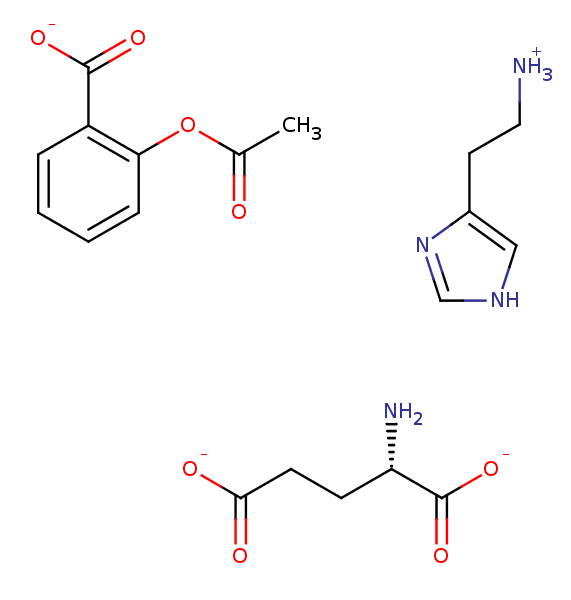

class: center, middle # Specific aims ## Admission to candidacy exam (ACE) Bas Rustenburg --- name: aims # Aims 1. The binding of charged ligands * Host-guest model systems * Corrections to free energy calculations * Isothermal titration calorimetry experiments * Bayesian approach to estimate experimental errors 2. Protonation state effects on binding * Small molecule pKa predictions * Protein pKa predictions with MCCE * Fluorescence and ITC experiments on kinase domains 3. Weak association and multiple binding * Human serum albumin as a model system * Free energy calculations with semigrand canonical ensemble formalism * ITC experiments to provide experimental data * Bayesian selection of theoretical binding models from experimental data --- layout: true # Aim 1 --- ## The binding of charged ligands  --- ## Host-Guest systems provide a way to study binding interactions without the issues like: <table> <td> <ul> <li> Expressing and purifying a protein</li> <li> Dissolving protein to high concentration for ITC experiments </li> <li> Sampling a large system with molecular dynamics</li> </ul> </td> <td> <video width="420" height="280" autoplay="autoplay" loop> <source src="videos/host.mp4" type="video/mp4"> Your browser does not support the video tag. </video> </td> </table> Cucurbit-[7]-uril, a host molecule that binds cationic guests.